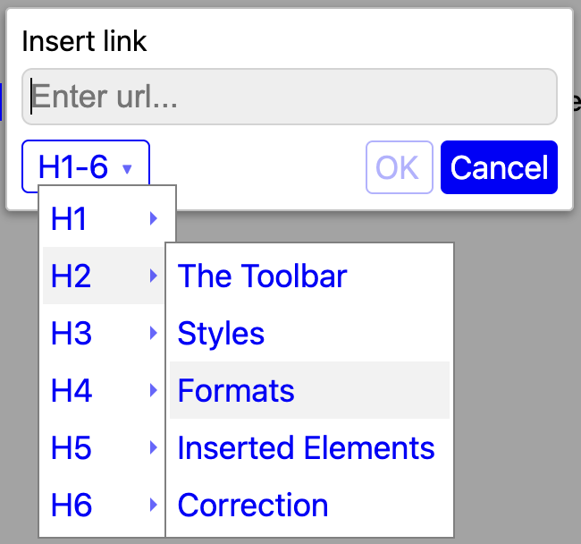

. Select it and then press the image button to see its URL and alt text. Here is the same image, but sourced from the local file system relative to the document location:
. Select it and then press the image button to see its URL and alt text. Here is the same image, but sourced from the local file system relative to the document location:The file you're looking at is just a simple HTML file that includes all the kinds of elements supported by the MarkupEditor by default. The file was created and edited using the MarkupEditor desktop app. The desktop app is a simple Electron application with a few hundred lines of JavaScript, built from the MarkupEditor base toolkit. In addition to the desktop app, the MarkupEditor base is used to deliver WYSIWYG editing capabilities in Swift and VSCode. It can be used in any environment that loads a web view, including a web browser. If you’re looking at this demo, you are probably using it in your browser directly from the project web site hosted on GitHub Pages.
The MarkupEditor comes with a default toolbar that looks like this:
As you select items in the document, the toolbar highlights what is active within the selection. The default toolbar is built to support the kind of editing you would do with Markdown, but it’s also extensible. If you arrived at this document from the link at the project web site, then the default toolbar has a “file toolbar” prepended to it, like this:
In the demo, the file toolbar buttons on the left let you:
Start over with an empty document.
Open a local file for editing.
View the HTML in the document. For demo purposes, the read-only HTML updates as you type.
Copy the HTML to the clipboard.
The demo won’t let you save what you’ve edited, because it’s just running in your browser. To interact with the local file system properly, you need to embed the MarkupEditor in some kind of app that uses a web view, which is what the desktop app does using Electron. The desktop app uses the default MarkupEditor toolbar because it also provides a File menu that gives you access to standard file operations, like New, Open, Save, and Save As.
The key bindings are visible when you hover over a button. The toolbar is customizable and extensible, and the key bindings can be reassigned, without modifying the code of the MarkupEditor itself. Beyond the Markdown-scoped capabilities of the default toolbar, the MarkupEditor also supports underline, subscript, and superscript text formatting.
The toolbar is just a convenience - you don’t need to use it at all. You can control whether it’s visible and what it contains. To find out more information, take a look at the Developer’s Guide.
When you load an HTML document into the MarkupEditor, the document is styled using markup.css. In the demo, you can use the File toolbar above to examine the raw HTML of the demo.html document you’re editing. You will see it is "clean" in the sense that it contains no embedded attributes like style, font, or sizing. The overall document styling is up to you as a developer.
This is a Body style paragraph. The title above this paragraph uses an H4 style. You can change the paragraph style for a single paragraph or across a selection of paragraphs using the Paragraph Style menu.
A style applies to a block of text. The MarkupEditor supports the standard HTML styles of P, H1, H2, H3, H4, H5, H6, and CODE. Styles cannot contain other styles. So, for example, you can't embed an H3 style header in an H1 style header.
The Paragraph Style menu refers to P style as "Body". The notion of a paragraph style is pretty well understood by every person who has ever used a word processor, spreadsheet, or even the most primitive text editing tool these days. Your users don't need to know anything about HTML or CSS just to use the MarkupEditor.
When you are editing text within a code block (the Code paragraph style), and you want to exit from the Code style, hold the Command (⌘) key and press Enter. The “hard return” creates a new Body style element.
The MarkupEditor supports both numbered and bulleted style lists. They should behave like you would expect, maintaining the list style and progressing through the proper markers on sub-lists. You can switch styles using the toolbar and change styles within lists. Lists can contain tables and images, and the various paragraph styles can be applied within them.
Here is a numbered sublist.
With two items.
Like the other styles, indenting applies to a block of text, although you can indent both normal paragraphs and headers. Once you indent, the toolbar enables the outdent button. You can indent multiple times, and you can outdent until there is no more indenting to outdent. The hot-key combo ⌘] indents and ⌘[ outdents.
// Here is an example of code that has been indented twice. print("Hello, world!")
Text can be formatted to present as bold, italic, code, and
strikethrough. Unlike styles, formats can be combined; so for example, a bold, italic, underlined section of text works just fine.
Note that by default, the buttons to produce underline, subscript and superscript formats are not shown in the toolbar. (This is also true of the undo and redo buttons, but they are always available via the Edit menu and the standard hot keys when you have a keyboard.) You can adjust the contents of the toolbar by specifying a custom ToolbarConfig, as discussed in the Developer’s Guide.
You can insert and edit links, images, and tables in the document. Each of these elements requires some kind of user input to create them. The MarkupEditor presents either a modal popover at the selection location, or in the case of tables, a dropdown menu at the MarkupEditor toolbar.
To insert a link, start by selecting some text to link-to or just select at a location to insert a URL within the text. When you select the Insert/edit link button (or use the ⌘K hot key), a popover is presented at the selection location. Enter a URL and OK (or just hit Enter). Cancel closes the popover, leaving the original text/element unchanged. To delete an existing link, use the Remove button.
You can easily insert links to headers within your document using the H1-6 dropdown in the default link dialog. From the dropdown, you can select a header by name.

When you select a header, in identifier is created for that header (or the existing header identifier is used if it exists). The identifier is the same as the header contents, except a) it starts with a #; b) it is all lowercase, and c) words are separated with - rather than spaces. Selecting OK (or just pressing Enter) will insert the link and identifier. Note that if your selection is empty (i.e., no text is selected, just the cursor is showing), then the text of the header itself is inserted at the cursor location and linked-to the header you selected. This makes creating a table of contents pretty easy!
When your mouse hovers over a link, it shows “⌥+Click to follow”, followed by the URL you will be taken to. When editing, you may want to edit the link, which you can by pressing the Insert/Edit link button in the toolbar (or use the ⌘K hot key). If you want to follow the link, hold the Option button (⌥) and click anywhere in the link.
Images have to be inserted at a point in some text, or at the beginning or end of some text. You can paste-in an image using the usual ⌘V or the menu. You can also select an image from the file system or provide an URL. To do that, press the Insert Image button to bring up the image popover. Specify the URL (or, if provided within the environment you’re using for the MarkupEditor, use the Select… button for a standard file picker to select an image to insert). Specify additional descriptive text to go along with it (which is the right thing to do for people with visual impairment). As you tab between the URL and alt text fields, the MarkupEditor shows you the image in the document. Press OK when you are happy with the image, or Cancel to revert the document to its original state before you started inserting an image.
Once you have an image in your document, you can resize it using the handles that show up when you select it, or using a pinch gesture on a touch device.
Here is an inline image sourced from the Internet: . Select it and then press the image button to see its URL and alt text. Here is the same image, but sourced from the local file system relative to the document location:
To delete an image, use the keyboard to delete it like text.
Tables have to be inserted between paragraphs, not inline with text. If you insert a table while you have selected a point inside of a paragraph, the table will be inserted after that paragraph. When you have the cursor at a point in text, press the Insert Table button to expose the table dropdown menu. The Create item lets you create a table with the number of rows and columns you want. Once you have created the table, or when you select a table in the document you're editing, the Create button is disabled. In other words, you cannot insert a table into a table.
The Add item in the table dropdown let you add a header at the top of the table or add rows/columns above/below the point you have selected in the table. The Delete item lets you remove the row/header or column you have selected in the table. To delete the header, select inside of it and press the delete row button. You can delete the table by backspacing over it, or using the Table item in the Delete submenu.
Below is a simple two column table with a header. You can navigate forward using Tab (⇥) and backward using Shift+Tab (⇧⇥). The header always spans across the table, with any text centered within it.
|
The table header |
|
|---|---|
|
A row |
with two columns |
|
Another row |
with two columns |
You can change the table bordering using the Border submenu in the Table dropdown. The default option is to put a border around all the individual cells, but you can just apply a border around the body and header (if there is one), or just to the outside of the entire table, or turn off bordering completely.
If they’re included in the toolbar (which they are not, by default), the undo and redo buttons should do what you expect and are also accessible via the menu and hot-keys (i.e., ⌘Z for undo and ⇧⌘Z for redo). For example, if you add a row to a table, undo will remove it. If you added a row, typed some text in a cell, and then added a column, three undos should get you back to where you started.